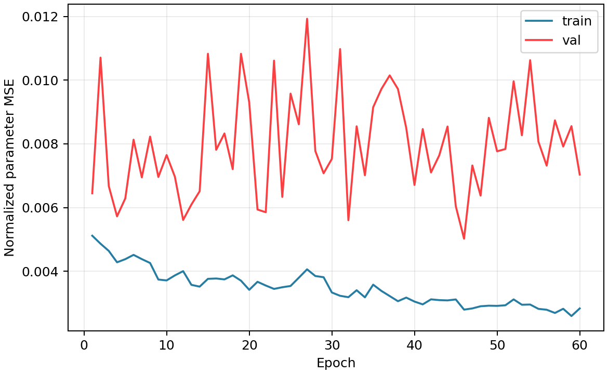

LNO327 CNN 训练任务报告
任务
| status | done |
|---|
| elapsed | 0.5 min |
|---|
| output | runs/cloud_fwhm10_n512/residual4d_fwhm10_heads_lr2e3_aux000_seed20260529_b64 |
|---|
结果
| test mean range-normalized MAE | 4.34% |
|---|
| test overall MAE | 0.336047 meV |
|---|
| test overall RMSE | 0.827783 meV |
|---|
| best epoch | 46 |
|---|
| best val loss | 0.00502176 |
|---|
解释性指标
| gate test mean | 0.387334 |
|---|
| gate test std | 0.275082 |
|---|
可视化

训练 loss 曲线
 4D attention 权重
4D attention 权重
日志尾部
[task] start mode=residual4d out=runs/cloud_fwhm10_n512/residual4d_fwhm10_heads_lr2e3_aux000_seed20260529_b64
resumed full model from runs/cloud_fwhm10_n512/residual4d_wide_fwhm10_n512_warmfig3_e220_aux003_seed20260528_b64/cnn.pt
trainable scope=heads trainable=28245/105365
epoch 0001 train_loss=0.00511615 val_loss=0.00644652 best_val=0.00644652
epoch 0010 train_loss=0.00371198 val_loss=0.00764856 best_val=0.00572341
epoch 0020 train_loss=0.00341708 val_loss=0.00929948 best_val=0.00561049
epoch 0030 train_loss=0.00333264 val_loss=0.00752896 best_val=0.00561049
epoch 0040 train_loss=0.00304771 val_loss=0.0067093 best_val=0.00560116
epoch 0050 train_loss=0.00291253 val_loss=0.00776701 best_val=0.00502176
epoch 0060 train_loss=0.00283201 val_loss=0.00703528 best_val=0.00502176
[task] best_epoch=46
[task] test_mean_range_mae=0.0433738